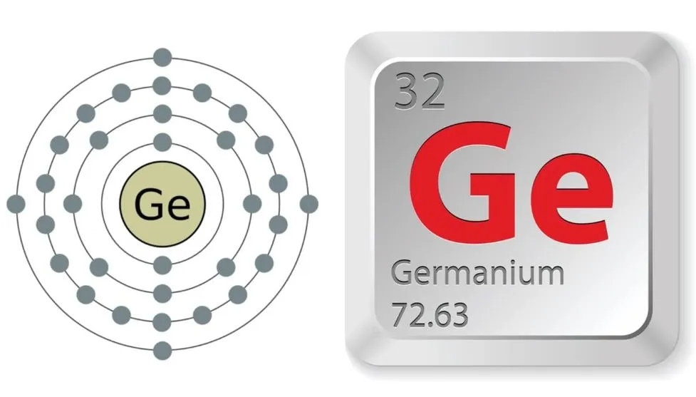

Elektronik dünyasına ve teknoloji tarihine baktığımızda, sahneyi genellikle hep aynı isim kapatır: Silisyum (Silikon). Vadilere adı verilmiş, dijital devrimin sembolü olmuş bir elementten bahsediyoruz. Ancak periyodik cetvelin derinliklerinde, silisyum kadar göze batmayan ama kritik anlarda teknolojinin kilit taşını oluşturan, tabiri caizse "gölgelerdeki stratejist" başka bir element daha var: Atom numarası 32 olan Germanyum. Peki nedir bu elementin olayı? Neden modern dünyada ve geleceğin güç savaşlarında bu kadar kritik bir yerde duruyor? Ne Tam İletken Ne Tam Yalıtkan: Yarı İletkenliğin Denge Sanatı Elektrik dünyasının dilinden konuşursak; germanyumun son katmanında 4 elektron bulunur. Bu atomik yapı onu ne tam anlamıyla bakır gibi akıp giden bir iletken, ne de plastik gibi akımı kesen bir yalıtkan yapar. Germanyum, tam olarak ortada duran bir yarı iletkendir (metaloid). Germanyumu elektronik teknolojisi için "hayati" kılan asıl sihir ise sıcaklığa verdiği tepkide gizli. Soğuk veya oda sıcaklığındaki pasif durumundan, belirli bir ısıya ulaştığında elektriğe karşı gösterdiği direncin aniden değişmesi; elektron akışını milisaniyeler içinde kontrol etmemizi sağlar. Transistörlerin doğuşunda ve mikroçip teknolojisinin emekleme döneminde ilk sahneye çıkanın silisyum değil, germanyum olması tesadüf değildir. Görmeyeni Gören Element: Kızılötesi ve Optik Teknolojisi Germanyumun marifetleri sadece elektrik akımını yönetmekle sınırlı değil. Işıkla kurduğu ilişki de bir o kadar büyüleyici. Germanyum, insan gözünün gördüğü görünür ışığa karşı tamamen opak (geçirmez) bir duvar gibidir; ancak iş kızılötesi (Infrared) ışınıma geldiğinde adeta bir cama dönüşür. Yüksek kırılma indeksiyle birleşen bu "kızılötesine karşı saydamlık" özelliği, onu modern optik dünyasının vazgeçilmezi yapar: Gece görüş kameraları ve termal lensler, Askeri hedefleme ve keşif sistemleri, Fiber optik haberleşme hatları... Kısacası, gece karanlığında dünyayı "ısı" üzerinden okuyan tüm gelişmiş optik sistemlerin kalbinde germanyum camları yatar. Silisyum Varken Neden Germanyum Savaşları Çıkabilir? Burada akıllara şu soru gelebilir: "Silisyum da yarı iletken, o zaman sorun ne?" Sorun şu ki; silisyum doğada (kumda) neredeyse sonsuz miktarda bulunurken, germanyum son derece nadir ve kısıtlı bir cevherdir. Doğada doğrudan "germanyum madeni" diye bir şey bulmak zordur; genellikle çinko madenciliğinin veya kömür külünün bir yan ürünü olarak elde edilir. Arzın son derece sınırlı olması, buna karşılık askeri teknolojilerden fiber optik altyapıya, uzay panellerinden yüksek hızlı çiplere kadar kritik alanlarda vazgeçilmez olması germanyumu stratejik bir koz haline getiriyor. Nitekim günümüzde küresel güçlerin nadir toprak elementleri ve kritik hammaddeler üzerindeki ambargo savaşlarında germanyum ismi en üst sıralarda geçmeye başladı bile. Özetle; Gelecekte teknolojinin yönünü sadece yazılımlar veya yapay zeka belirlemeyecek. O yazılımların koştuğu donanımları ve o sistemlerin gördüğü gözleri oluşturan nadir elementler belirleyecek. Germanyum; atomic numarası 32 olan sıradan bir metaloid gibi görünse de, kısıtlı rezervleri ve benzersiz fiziksel özellikleriyle geleceğin teknolojik ve jeopolitik denkleminde adından çok daha fazla söz ettireceğe benziyor.